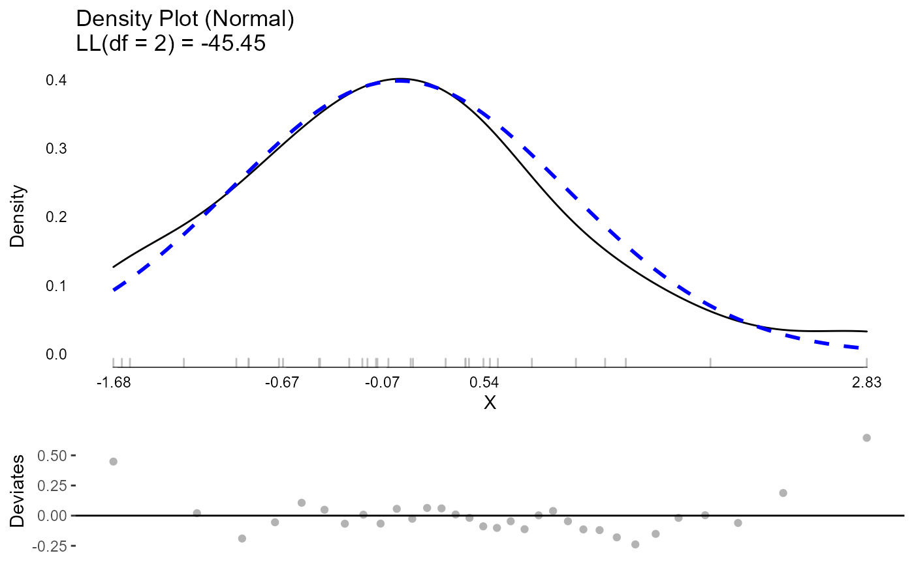
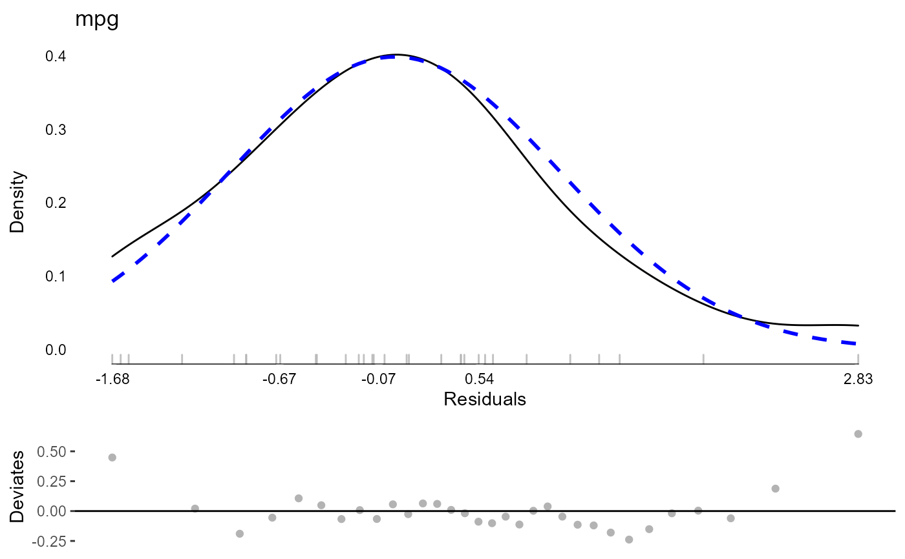
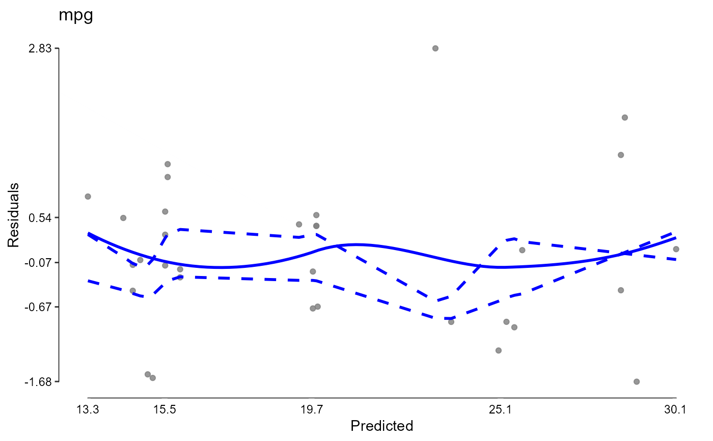
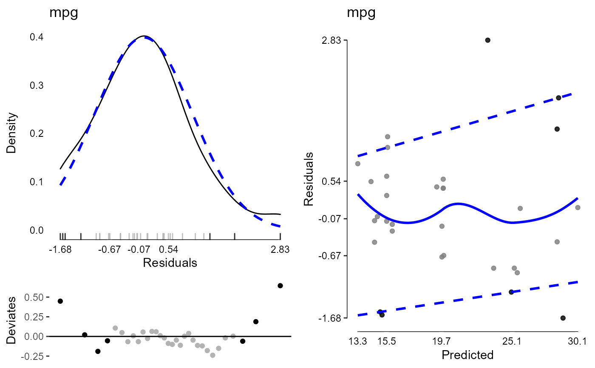

A set of functions to calculate
model diagnostics on models, including constructors,
a generic function, a test of whether an object is of the
modelDiagnostics class, and methods.
modelDiagnostics(object, ...) as.modelDiagnostics(x) is.modelDiagnostics(x) # S3 method for lm modelDiagnostics( object, ev.perc = 0.001, robust = FALSE, distr = "normal", standardized = TRUE, ... )
| object | A fitted model object, with methods for
|
|---|---|
| ... | Additional arguments, passed to |
| x | An object to test or a list to coerce to a
|
| ev.perc | A real number between 0 and 1 indicating the proportion of the theoretical distribution beyond which values are considered extreme values (possible outliers). Defaults to .001. |
| robust | Whether to use robust mean and standard deviation estimates for normal distribution |
| distr | A character string given the assumed distribution.
Passed on to |
| standardized | A logical whether to use standardized residuals.
Defaults to |
A logical (is.modelDiagnostics) or
a modelDiagnostics object (list) for
as.modelDiagnostics and modelDiagnostics.
#> Warning: singularity problem#> Warning: tiny diagonals replaced with Inf when calling blkfct#> Warning: singularity problem#> Warning: tiny diagonals replaced with Inf when calling blkfctmd$extremeValues#> Empty data.table (0 rows and 3 cols): mpg,Index,EffectTypemd <- modelDiagnostics(testm, ev.perc = .1)#> Warning: singularity problem#> Warning: tiny diagonals replaced with Inf when calling blkfct#> Warning: singularity problem#> Warning: tiny diagonals replaced with Inf when calling blkfctmd$extremeValues#> mpg Index EffectType #> 1: 24.4 8 Residuals #> 2: 10.4 15 Residuals #> 3: 10.4 16 Residuals #> 4: 32.4 18 Residuals #> 5: 33.9 20 Residuals #> 6: 21.5 21 Residuals #> 7: 30.4 28 Residualstestdat <- data.frame( y = c(1, 2, 2, 3, 3, NA, 9000000, 2, 2, 1), x = c(1, 2, 3, 4, 5, 6, 5, 4, 3, 2)) modelDiagnostics( lm(y ~ x, data = testdat, na.action = "na.omit"), ev.perc = .1)$extremeValues#> Warning: tiny diagonals replaced with Inf when calling blkfct#> Warning: tiny diagonals replaced with Inf when calling blkfct#> y Index EffectType #> 1: 9e+06 7 Residuals#> Warning: tiny diagonals replaced with Inf when calling blkfct#> Warning: tiny diagonals replaced with Inf when calling blkfct#> y Index EffectType #> 1: 9e+06 7 Residuals